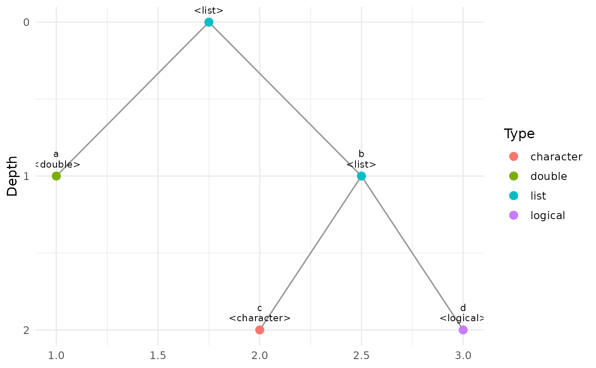

This vignette shows the function utilities of
lstrrr.
TL;DR
| Function | Description |
|---|---|
list_stats(x) |
Convert a nested list to tree data (nodes + edges) |
viz_list(x) |
Visualize list structure as a tree diagram |
dir_listwise(paths) |
Convert file paths to a nested list |
modify_list(x, val) |
Recursively merge two lists |
modify_list
modify_list is similar to
utils::modifyList. In most cases, we can use
modify_list to replace utils::modifyList.
v1 <- modify_list(foo, bar)
str(v1)
#> List of 3
#> $ a: num 1
#> $ b:List of 2
#> ..$ c: chr "a"
#> ..$ d: logi TRUE
#> $ e: num 2
v2 <- utils::modifyList(foo, bar)
str(v2)
#> List of 3
#> $ a: num 1
#> $ b:List of 2
#> ..$ c: chr "a"
#> ..$ d: logi TRUE
#> $ e: num 2
identical(v1, v2)
#> [1] TRUEThe only difference is that modify_list keeps the
unnamed elements.
bar2 <- list(e = 2, b = list(d = TRUE), 3, data.frame())
v3 <- modify_list(foo, bar2)
str(v3)
#> List of 5
#> $ a: num 1
#> $ b:List of 2
#> ..$ c: chr "a"
#> ..$ d: logi TRUE
#> $ e: num 2
#> $ : num 3
#> $ :'data.frame': 0 obs. of 0 variables
v4 <- utils::modifyList(foo, bar2)
str(v4)
#> List of 3
#> $ a: num 1
#> $ b:List of 2
#> ..$ c: chr "a"
#> ..$ d: logi TRUE
#> $ e: num 2
identical(v3, v4)
#> [1] FALSEMake list.files Result into a List
files <- list.files(".", recursive = TRUE, full.names = TRUE)
head(files)
#> [1] "./benchmark.md"
#> [2] "./benchmark.Rmd"
#> [3] "./do_purrrlike_cache/html/__packages"
#> [4] "./do_purrrlike_cache/html/list_pwalk_0f1131d1965314cb05dd2699ffbc33eb.cast"
#> [5] "./do_purrrlike_cache/html/list_pwalk_0f1131d1965314cb05dd2699ffbc33eb.RData"
#> [6] "./do_purrrlike_cache/html/list_pwalk_0f1131d1965314cb05dd2699ffbc33eb.rdb"
files_list <- dir_listwise(files)
cli::cli_alert_info("Class of files_list: {.cls {class(files_list)}}")
#> ℹ Class of files_list: <list>Statistics for R list
list_stats() is a function to get the statistics of a
list. The result is a list containing 2 elements: nodes and
edges.
list_stats(foo)
#> $nodes
#> id parent name type path depth is_leaf
#> 1 1 NA root list root 0 FALSE
#> 2 2 1 a double root.a 1 TRUE
#> 3 3 1 b list root.b 1 FALSE
#> 4 4 3 c character root.b.c 2 TRUE
#> 5 5 3 d logical root.b.d 2 TRUE
#>
#> $edges
#> from to
#> 1 1 2
#> 2 1 3
#> 3 3 4
#> 4 3 5Visualize R list
viz_list() is a function to visualize a list. The result
is a ggplot2 object.
viz_list(foo)
It is useful to get a sense of the structure of a complex list.
viz_list(sputnik_1, point_size = 1.5, text_size = 1L, line_width = 0.6) +
ggplot2::coord_flip()